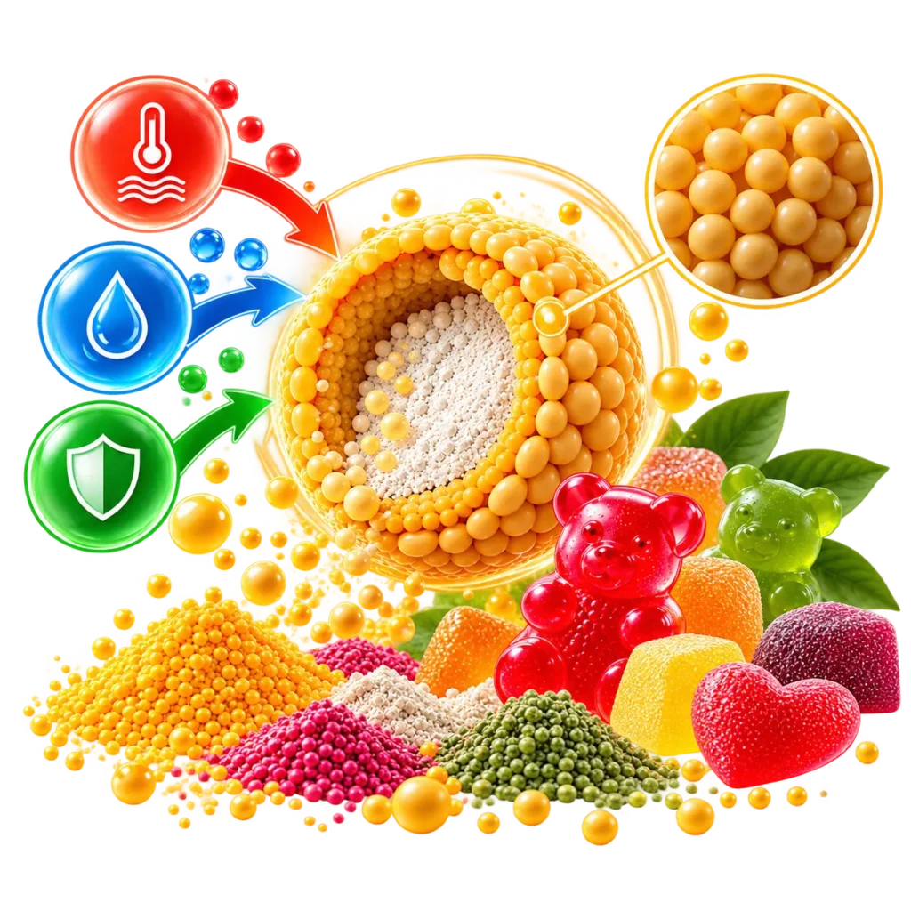

Микрогранулы с маскировкой вкуса для жевательных мармеладок: защищают чувствительные нутриенты при варке, распределяются равномерно и сохраняют гладкую текстуру.

ThermoSpheres™ — инкапсулированные микрогранулы нутриентов, разработанные специально для производства жевательных мармеладок. Сочетание точного гранулирования и микроинкапсуляции защищает чувствительные нутриенты от тепла, влаги и взаимодействия с другими ингредиентами.
Микрогранулы распределяются равномерно — без осаждения и крупинчатости — и маскируют неприятный вкус и запах. Подходят для мармелада на пектине, желатине и веганской основе.
Три задачи, которые технология решает в мармеладном производстве.
Чувствительные нутриенты защищены от температуры варки, влаги и взаимодействия между ингредиентами.
Нутриент высвобождается в нужный момент, а не теряется в процессе производства.
Стабильность актива, гладкая текстура и приятный вкус каждого кусочка мармелада.
От функциональности до вкуса — на каждом этапе есть измеримый эффект.
Нутриенты стабильны внутри мармелада: защищены от температур процесса, влаги и взаимодействия ингредиентов.
Неприятный вкус и запах маскируются; без крупинчатости, гладкая текстура каждого кусочка.
Подходит для разных форм и рецептур мармелада — пектин, желатин, веганская основа.
Микрогранулы для функционального мармелада — с учётом термостабильности и маскировки вкуса.
Микрогранулы магния: термостабильны при производстве мармелада, нейтральный вкус, подходят для разных форм магния (например, цитрат, глицинат).
Микрогранулы лизина: незаменимая аминокислота с маскировкой вкуса, повышенной стабильностью и равномерным распределением.
Микрогранулы биотина: термостабильны в процессе производства, обеспечивают защиту и биодоступность. Для функционального мармелада.
Микрогранулы альфа-липоевой кислоты: защищены для стабильности, вкус маскирован. Для мармеладок с антиоксидантным действием.
Ассортимент приведён по материалам PHS Life Sciences. Наличие и спецификации подтверждаются перед заказом.
Форматы, для которых разработана технология.
Термостабильные микрогранулы нутриентов с маскировкой вкуса, разработанные специально для жевательных мармеладок.
Производство мармелада связано с нагревом, влагой и взаимодействием ингредиентов. Эти факторы влияют на стабильность нутриентов, вкус и равномерность распределения.
Для мармелада на пектине, желатине и веганской основе. Пригодность подтверждается испытаниями в конкретной рецептуре.
В портфеле — магний, лизин, биотин и альфа-липоевая кислота. Актуальный ассортимент подтверждается у PHS.
Пришлите состав продукта и требования к рецептуре — подберём технологию, пришлём образцы, спецификации и данные по применению.